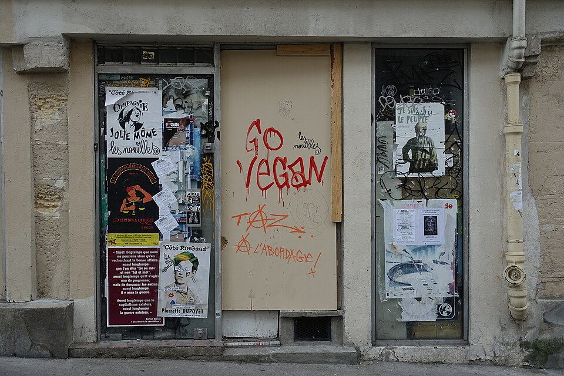

Recensement des locaux vacants
Identifier les cellules fermées, leur état, leur visibilité et leurs contraintes.
Réactiver les cellules commerciales vides pour soutenir la vie locale et les usages de proximité.

Cette action prépare la remise en mouvement des rez-de-chaussée fermés et locaux disponibles, avec des usages adaptés aux besoins des habitants et à la capacité réelle des territoires.
Une cellule fermée peut devenir boutique test, atelier partagé, permanence associative ou point de services.
Réactiver un local contribue à la visibilité d'une rue, à l'activité de proximité et à la confiance des habitants.
Indicateur à renseigner après recensement.
À documenter quand les projets seront lancés.
Suivi à ouvrir avec les partenaires compétents.
À mesurer territoire par territoire.
Oui, via la page contact, avec adresse, état général et coordonnées de contact.
Non. Ils doivent répondre aux besoins locaux et aux contraintes du local.
Qualifier le bail, l'état du local et les usages possibles : commerce de proximité, atelier, boutique éphémère ou service associatif.
Travailler avec propriétaires, collectivite et habitants pour eviter les vitrines durablement fermees.
Tester un usage mixte, sobre et progressif lorsque le local n'est pas immédiatement compatible avec une activité commerciale classique.
Les informations transmises doivent permettre une premiere qualification sans exposer publiquement d'adresse sensible.
La fermeture d’un commerce n’est jamais seulement une vitrine vide. Elle signale souvent une fragilité plus large : baisse de fréquentation, concurrence périphérique, changement des habitudes d’achat, difficulté de transmission, loyers inadaptés, locaux obsolètes, manque d’habitants dans le centre ou perte de services publics de proximité.
Les programmes nationaux de revitalisation montrent que le commerce est indissociable de l’habitat, de l’espace public, de la mobilité et de la présence d’activités. Action cœur de ville intègre explicitement le développement économique et commercial dans ses axes, tandis que Petites villes de demain cible les centralités de moins de 20 000 habitants.
Le commerce de proximité dépend d’un écosystème : logements occupés, flux piétons, stationnement, accessibilité, pouvoir d’achat, qualité de l’espace public et loyers. Une cellule commerciale dégradée ou trop grande pour un entrepreneur local reste souvent fermée même lorsqu’un besoin existe.
TVF peut recenser les locaux, qualifier leur état, identifier les usages possibles, mettre en relation propriétaires et porteurs d’activités, organiser des occupations temporaires, intégrer la rénovation légère et faciliter l’émergence de tiers-lieux, ateliers, boutiques éphémères ou services associatifs.
Exemple fictif à visée pédagogiqueUne ancienne boutique fermée depuis plusieurs années pourrait devenir atelier partagé pour artisans, avec une phase test de six mois et un loyer solidaire. Exemple fictif : il sert à expliquer une option de reconversion, pas à annoncer un projet existant.
Un centre habité crée des flux quotidiens, sécurise la rue et soutient les achats réguliers.
Pas nécessairement. Certains locaux peuvent accueillir un atelier, une association, un service, une formation ou un usage temporaire.
En vérifiant l’état du local, les contraintes de bail, le coût de remise en état et la demande réelle avant communication.
La vacance commerciale se mesure difficilement sans périmètre précis. TVF ne publie pas de taux sans relevé daté, mais peut aider à qualifier les cellules fermées, leurs usages possibles et les conditions de retour à une activité locale.
Chaque situation doit être lue avec ses causes propres : droit, coût, état technique, besoin local, portage, financement et capacité d'exploitation.
TVF apporte un cadre : signalement, qualification, orientation, coopération, convention, suivi et publication prudente des résultats.
Un local vide peut être testé pour une activité de proximité, un atelier, une association ou un tiers-lieu temporaire si l'accès, la sécurité, le bail et les charges sont compatibles.
Exemple fictif à visée pédagogique, non présenté comme une réalisation TVF.
Statut de publication : les informations opérationnelles deviennent publiques après vérification, accord de publication et rattachement à un territoire clairement identifié.
Signaler un commerceTVF ne remplace pas les acteurs publics, techniques ou financiers existants. Son rôle est de relier les particuliers, propriétaires, entreprises, artisans, associations, collectivités, fondations, mécènes, investisseurs et bénévoles autour d'un même objectif : redonner vie aux bâtiments, commerces, terrains, matériaux et territoires.
Aujourd'hui, les expertises existent mais restent souvent dispersées : rénovation urbaine, financement, ingénierie, transition écologique, accompagnement des collectivités, mobilisation citoyenne et réemploi. TVF propose une méthode de coordination pour transformer ces ressources séparées en projets locaux suivis.
Comprendre la différence TVF